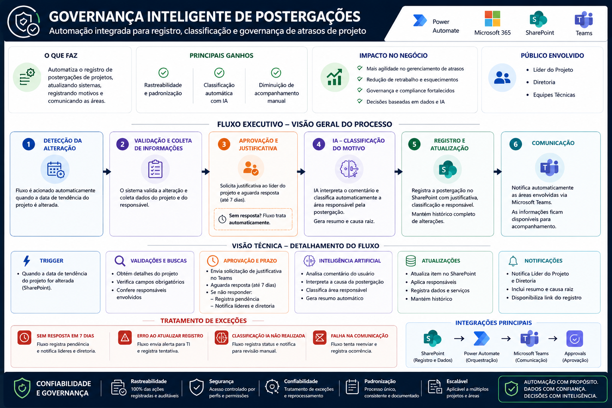

Fluxo de PostergaçõesPower Automate
Governança de Postergações
Problema de negócio
Devido ao alto volume de projetos conduzidos simultaneamente, postergações ocorriam sem um processo padronizado de registro dos motivos. A ausência desse histórico dificultava a identificação das causas das alterações de prazo, a análise de tendências e a construção de planos de ação preventivos.
Solução
Estruturação de um fluxo automatizado para registro de postergações de projetos. Sempre que uma alteração de prazo é identificada, o gestor responsável recebe automaticamente um formulário para preenchimento da justificativa, garantindo registro padronizado em base centralizada.
Tecnologias usadas
Power Automate
Microsoft Lists
Microsoft Teams
Power BI
Impacto
- ~24 horas/mês reduzidas de atividades manuais
- 8 colaboradores suportados na equipe
- Rastreabilidade e padronização das informações
- Acompanhamento gerencial com dados consolidados